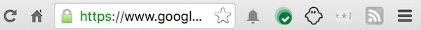

Some examples:
The RSS icon in the following screenshot represents a page action that lets you subscribe to the RSS feed for the current page.
Hidden page actions appear grayed out. For example, the RSS feed below is grayed out, as you can’t subscribe to the feed for the current page:

Please consider using a browser action instead, so that users can always interact with your extension.
Register your page action in the extension manifest like this:
{
"name": "My extension",
...
"page_action": {
"default_icon": { // optional
"16": "images/icon16.png", // optional
"24": "images/icon24.png", // optional
"32": "images/icon32.png" // optional
},
"default_title": "Google Mail", // optional; shown in tooltip
"default_popup": "popup.html" // optional
},
...
}Since devices with less-common scale factors like 1.5x or 1.2x are becoming more common, you are encouraged to provide multiple sizes for your icons. Chrome will select the closest one and scale it to fill the 16-dip space. This also ensures that if the icon display size is ever changed, you don’t need to do any more work to provide different icons! However, if the size difference is too extreme, this scaling can cause the icon to lose detail or look fuzzy.
The old syntax for registering the default icon is still supported:
{
"name": "My extension",
...
"page_action": {
...
"default_icon": "images/icon32.png" // optional
// equivalent to "default_icon": { "32": "images/icon32.png" }
},
...
}Like browser actions, page actions can have an icon, a tooltip, and popup; they can’t have badges, however. In addition, page actions can be grayed out. You can find information about icons, tooltips, and popups by reading about the browser action UI.
You make a page action appear and be grayed out using the pageAction.show and pageAction.hide methods, respectively. By default, a page action appears grayed out. When you show it, you specify the tab in which the icon should appear. The icon remains visible until the tab is closed or starts displaying a different URL (because the user clicks a link, for example).
For the best visual impact, follow these guidelines:
You can find simple examples of using page actions in the examples/api/pageAction directory. For other examples and for help in viewing the source code, see Samples.